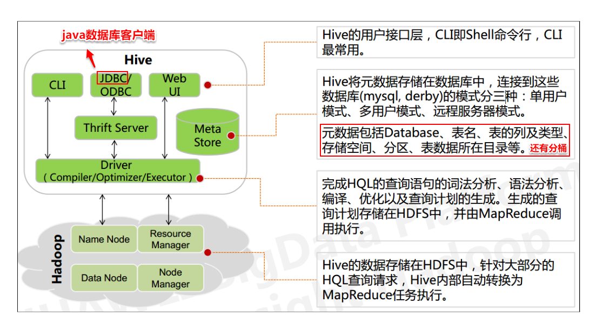
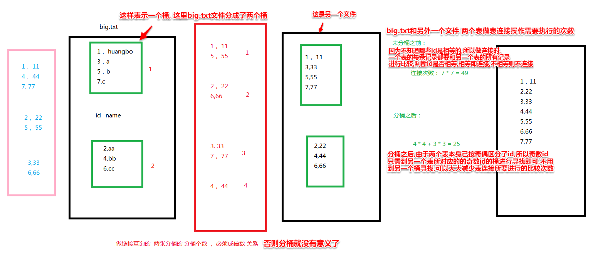
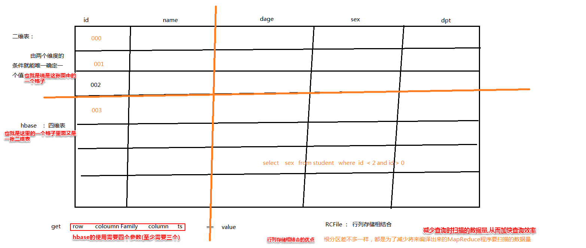

一、
hive只是解决了MapReduce计算的复杂度, 并没有解决MapReduce计算效率低(延时比较高)的问题
hive的最大的优点： 使用方便 使用SQL语句的方式进行操作
Hive的本质是将 SQL 语句转换为 MapReduce 任务运行,要执行MapReduce任务需要启动很多东西,所以对于小数据量来说效率会比较低。所以现在支持使用spark计算框架来执行hive的sql语句,效率会高很多。
hive是数据仓库
存储在数据仓库(区别于数据库)的数据可以完全不用满足任何数据库相关的设计原则(不用满足数据库设计的ACID、三大范式等特征)
你可以把任何数据进行抽象，来存储在HDFS中。如:
age,sex,name
huangbo,18,beijing
则,再插入数据时 按照:19,xuzheng,beijing 也能插入进去
读模式 写模式
在往数据存储介质中 插入或者存储数据的时候 做校验的时机问题
写模式： 插入数据的时候会做严格的校验,要按规定的数据类型、大小等等。数据库就是写模式
读模式： 插入数据的根本不会管这份数据是不是满足我们的抽象。
解析这个数据的时候，如果发现不满足要求，那么最后在进行处理的时候会直接抛出异常
数据仓库就是读模式
OLAP OLTP
OLAP : 联机分析(analysis)处理 查询属于OLAP, 因为不需要做事务处理
OLTP : 联机事务( transaction)处理 增删改属于OLTP,因为这三个需要做事务处理
数据库： 写模式 主要用来做OLTP, 也就是增删改比较多
数据仓库： 读模式 主要用来做OLAP(online analysis process), 也就是用来查询分析比较多
HDFS ： 文件系统
Hive ： 数据仓库
HBase ： NoSQL数据库 四维表格 所有数据的存储 都是 二进制格式
NoSQL数据库即为不能使用标准SQL语句的数据库
NoSQL ： no sql(不适用SQL进行查询) + not only sql(不仅仅只是SQL， NoSQL ： ql查询语言)
NoSQL ： redis hbase mongodb
hive中的SQL语句 并不是标准的 SQL 语法 而是 一种类似于标准SQL语法的语法
类SQL ： hive中的SQL hql == hive query language
二、hive的四大部分：

1、底层四大组件:
driver 解释器
compiler 编译器
optimizer 优化器
executor 执行器
2、跨语言服务 : Thrift server
3、用户接口(有三种形式)
cli 交互式命令行接口
jdbc
web ui
4、元数据库(Meta Store)
元数据库 存储 元数据
元数据： 描述数据的数据
元数据库：是RDBMS,是关系数据库
HIVE当中hive表存储的真实数据（如student.txt），其实存储在HDFS中。
描述这份真实数据的数据，叫做元数据，元数据存储在元数据库，元数据库一般情况下都存储在MySQL
如果要搭建一个hive的开发环境。
依赖条件：
1、准备一个运行正常的hadoop集群
2、准备一个元数据库MySQL
问题：
insert into table student value (,,,,);
这种语句表示的是在hive表中进行数据的插入,也就是在HDFS中进行插入,而不是在元数据库(Meta Store)中进行插入
真实数据，存储在HDFS中; 元数据, 储存在MySQL中
问题：
alter table rename student to new_student;
这种语句修改的是hive表的表名,而没有对hive表的具体数据内容进行修改,所以这种操作修改的是元数据库中的数据
源数据: 表示要处理数据的是从哪里来的,也是真实数据的一种
原数据: 一般也叫真实数据
元数据: 描述原数据的数据
hive中元数据库是如何储存元数据的?
元数据包含Database(数据库名)、表名、表的列及类型、存储空间、分区、分桶、表数据所在目录等。
因为并不是所有的hive表都有分区、分桶, 所以不可能把一个hive表所包含的所有元数据信息作为一条记录, 然后所有hive表的信息放在同一个元数据表里, 这样是不现实的, 会浪费很多存储空间。
考虑到元数据库是关系数据库, 关系数据库表之间的连接是非常方便的,所以可以把不是所有hive表都具有的特征单独建立一张元数据库表,然后利用表的连接操作就可以很方便的得到某个hive表的所有信息。比如分区、分桶并不是所有hive表都需要的 ,那么给他们单独建一张元数据库表,哪个hive表有分区、分桶的操作,就在该元数据库表中存放一条该hive表的记录。当然那些可以单独操作的元数据肯定也要单独建一张元数据库表,比如database(数据库名)
一条简单的建hive表的操作 create database myhive; myhive是数据库名, 每次建库的时候:
1、其实都会在元数据库中专门用来管理数据库名的表中插入一条记录
2、在对应的HDFS目录上，也会给你创建一个叫myhive.db的文件夹
从上面可以看出,当然不可能把库名和表名放在同一张元数据库表中,因为建库的时候是可以不建表的,所以库名需要在元数据库中有一张单独的表
三、
1、hive的分区以及分桶
hive的分区(只有分区表下面才能有分区,普通的表不行)
分区其实就是表目录下又有下一级目录,普通表时没有的
如 flow表 ： (流量数据)
将: flow/flow_beijing.log
flow/flow_tianjin.log
变成:
flow/beijing/flow.log
flow/tianjin/flow.log
也就是把不同的数据按一定的规则分到了不同的目录下,免得在同一个目录下数据太多
分桶
hive中的分桶的原理 和 mapreduce中的hashpartitioner的原理一模一样
如果一张hive表中的表是分桶表：
则分桶表的数据存储格式：即同一个分区下有多个小文件(桶),也就是一个分区目录下有多个文件,普通表只有一个文件
/user/hive/warehouse/myhive.db/flow/beijing/part-r-00000
/user/hive/warehouse/myhive.db/flow/beijing/part-r-00001
AST : abstract syntax tree 抽象语法树
AST上的每一个结点 就对应一个操作。 有的结点是 HDFS操作,有的是 mapreduce操作
2、hive中的真实数据的存储
假设数据的路径:
/user/hive/warehouse/myhive.db/student/province=beijing/beijing.txt
(1) /user/hive/warehouse是hive默认的数据仓库的根路径。myhive.db是文件夹名,其中myhive是数据库名
如 create database myhive;
每次在hive建库的时候，
1、其实都会在元数据库中的专门用来管理库名的表中插入一条记录
2、在对应的HDFS目录上，也会给你创建一个文件夹叫myhive.db
(2) 再如创建表 create table student(id int, name string);
1、要创建的表在哪个数据库中，那么对应的就会在该数据库的存储目录下再创建一个目录
所以创建完表在myhive库中就会是: /user/hive/warehouse/myhive.db/student 这就是当前这张表的数据存储目录, 则存储在这个目录下的所有数据，都是当前这张表存储的数据
2、同时会在元数据库中 专门用来管理所有hive表(表TBLS)的元数据库表中 插入一条记录
(3) 如果创建的是一张分区表：
分区表的表名叫 studnet_ptn (注意不是分区名,要区分: 分区表的表名和表的分区名)
则 /user/hive/warehouse/myhive.db/studnet_ptn 是对应的HDFS上该表的数据存储目录
因为该表是分区表，所以该表目录下不能直接存储数据
所有的数据，都必须要存储在该表中的任意一个分区中(也就是存储在该表目录的其中一个下一级目录中)
并且如果添加一个分区，则
1、在元数据库 有一张"专门用来管理整个hive中的所有的hive表的所有分区"的表 会插入一条记录
2、在hdfs中创建一个对应的分区目录如：
/user/hive/warehouse/myhive.db/student_ptn/province=beijing
在当前这个student_ptn分区表就有一个分区叫做 province=beijing
如果一份数据是属于 province=beijing 这个分区的，那么该份数据就存储在HDFS上对应的这个分区目录下, 而且该分区表的所有数据，都必须要存储在一个对应的分区目录下
(4) 表数据：(注意,hive表的一条数据类似于mysql表的一条记录,区别在于,hive表的一份数据就是一个文件,可以不用是一张表的全部数据(如beijing.txt),而mysql中一张表的全部数据才能是一个文件)
/user/hive/warehouse/myhive.db/student/province=beijing/beijing.txt
1、如果往某张表中插入数据，最终对元数据库没有影响
因为当前这个数据存储目录下的所有数据都是这张表的数据
(只有在列级、表级、数据库级的增删改(DDL)才会对元数据库造成影响, 单纯对某个具体的数据进行增删改(DML)是不会影响元数据库的)
2、插入进来的数据格式 没有限制。 因为 hive 是读模式
插入数据的方式：
1)粗暴的方式：
hadoop fs -put beijing.txt /user/hive/warehouse/myhive.db/student_ptn/province=beijing
这种方式直接跳过了hive ,直接使用hdfs上传文件,也一样能成功。
2)使用hive的语法进行插入： load data inpath 路径 into student;
(5) 分桶(把所有数据按照hash散列 分散成多个小文件存储在这个分桶表中)
原理：和HashPartitioner一模一样
hash散列时使用的参数： mapreduce ：key
hive ： 指定的分桶字段的值
即如果创建一张分桶表，那么一定要指定一个分桶字段， 且必须指定桶的个数(相当于hashPartitioner的分区数)
两者对应关系：(以下关系上下对应)
mapreduce 分区 key reduceTask/分区数/结果文件数
hive 分桶 指定字段 创建表时指定的分桶的个数/分桶表目录下的文件数
如果一张hive表是分桶表：
则分桶表的数据存储格式：即同一个分区下有多个小文件(桶)
/user/hive/warehouse/myhive.db/student/part-r-00000
/user/hive/warehouse/myhive.db/student/part-r-00001
......
其中, part-r-xxxxx 小文件的个数 等于 分桶的个数
一张表可以既是分区表也是分桶表, 如下例, 同一个表, 既分了区, 也分了桶(此时桶的个数就等于一个分区下的文件数)
/user/hive/warehouse/myhive.db/student_ptn/province=beijing/part-r-00000
/user/hive/warehouse/myhive.db/student_ptn/province=beijing/part-r-00001
/user/hive/warehouse/myhive.db/student_ptn/province=tianjin/part-r-00000
/user/hive/warehouse/myhive.db/student_ptn/province=tianjin/part-r-00001
(6) 到底是建分桶表 好 还是 建 分区表 好？
分区表的好处：
(1)如果查询语句是:
select count(*) from student_ptn where province = beijing;
那么如果正好是按照province字段来进行分区的,查询效率会非常高
(2)分区，完全是由管理员来指定如何分
分桶表的好处：
(1)提高做连接查询的效率 (因为"分桶字段的值相同的记录"肯定在同一个桶中(就像mapreduce中key相同的记录肯定在一个reduceTask中一样,所以hive的分桶中每个桶中的记录都遵循一样的散列规律))。如果是分桶字段做为连接查询时的连接条件字段, 则可以大大减小表连接时记录之间需要进行比较的次数。
(2)分桶操作只能由（HQL）程序判断如何分桶。
下图是分桶做连接查询时的好处体现:

(7)元数据库中包含的表
元数据库 会有些专门的表：
DBS 专门用来存储 hive 数据仓库中的所有 数据库
hive中的一个数据库，就对应了 DBS 这张表中的一条记录
TBLS 专门用来存储 hive 数据仓库中的所有 数据表
hive中的一个表，就对应了 TBLS 这张表中的一条记录
PARTITONS 专门用来存储 hive 数据仓库中的所有 数据表对应的所有分区
COLOUMNS_V2 专门用来存储 hive 数据仓库中的所有 数据表对应的所有的列名
.....
共有57 张表
--------------------------------------------------------------------------------------------------------------------
(8)hive支持的存储格式

TextFile: 即普通的文本格式, 比较不推荐这种格式的文件,因为占用磁盘太多
SequenceFile: 即一种序列化后的二进制格式,执行效率会高很多
RCfile: 行列存储相结合的一种格式
根据 最细粒度的操作 来判断是行存储还是列存储： 单次插入的 一条记录 到底是一行 还是 一列
mysql： 行存储
hbase: 列存储 每次插入一个key-value
行列储存相结合的优点如下图:

-----------------------------------------------------------------------------------------------------------------------------
HIVE中常见文件存储格式比较
版权
%3b' data-evernote-id='1606' class='js-evernote-checked'%3e%3c/path%3e %3c/svg%3e)
文件格式
在HIVE中，常见的文件存储格式有
TextFile
Parquet
ORC (相当于RC的进化版)
Sequence
RC
AVRO
建表语句
这里我们根据不同的文件格式，新建测试表。
--textfile文件格式
CREATE TABLE `test_textfile`(`id` STRING,…,`desc` STRING)
ROW FORMAT DELIMITED FIELDS TERMINATED BY ',' STORED AS textfile;
--parquet文件格式
CREATE TABLE `test_parquet`(`id` STRING,…,`desc` STRING)
ROW FORMAT DELIMITED FIELDS TERMINATED BY ',' STORED AS parquet;
--orc文件格式
CREATE TABLE `test_orc`(`id` STRING,…,`desc` STRING)
ROW FORMAT DELIMITED FIELDS TERMINATED BY ',' STORED AS orc;
--sequence文件格式
CREATE TABLE `test_sequence`(`id` STRING,…,`desc` STRING)
ROW FORMAT DELIMITED FIELDS TERMINATED BY ',' STORED AS sequence;
--rc文件格式
CREATE TABLE `test_rc`(`id` STRING,…,`desc` STRING)
ROW FORMAT DELIMITED FIELDS TERMINATED BY ',' STORED AS rc;
--avro文件格式
CREATE TABLE `test_avro`(`id` STRING,…,`desc` STRING)
ROW FORMAT DELIMITED FIELDS TERMINATED BY ',' STORED AS avro;
区别比较
我们从同一个源表新增数据到这六张测试表，为了体现存储数据的差异性，我们选取了一张数据量比较大的源表（源表数据量为30000000条）。
下面从存储空间和SQL查询两个方面进行比较。
其中SQL查询为包含group by的计量统计和不含group by的计量统计。
sql01:select count(*) from test_table;
sql02:select id,count(*) from test_table group by id;
相关的查询结果如下（为了防止出现偶然性，我们每条SQL至少执行三次，取平均值）
文件存储格式 | HDFS存储空间 | 不含group by | 含group by |
TextFile | 7.3 G | 105s | 370s |
Parquet | 769.0 M | 28s | 195s |
ORC | 246.0 M | 34s | 310s |
Sequence | 7.8 G | 135s | 385s |
RC | 6.9 G | 92s | 330s |
AVRO | 8.0G | 240s | 530s |
结论
从上面的测试结果可以看出
从占用存储空间来看，ORC和Parquet文件格式占用的空间相对而言要小得多。
从执行SQL效率来看，Parquet文件格式查询耗时要相对而言要小得多。
实际情况
从目前所得的结论来看，Hive中选用ORC和Parquet文件格式似乎更好一点，但是为什么Hive默认的文件存储格式是TextFile？
这是因为大多数情况下源数据文件都是以text文件格式保存（便于查看验数和防止乱码），这样TextFile文件格式的Hive表能直
接load data数据。
如果说我们想使用ORC文件或者Parquet文件格式的表数据，可以先通过TextFile表加载后再insert到指定文件存储格式的表中。
而这些不同文件格式的表我们可以通过数据分层保存，便于后期进行数据统计。
-----------------------------------------------------------------------------------------------------------------------
(9)

所以最好每次在创建表的时候时就指明hive数据中的分隔符,这是一个好习惯
hive中默认的列（字段）分隔符： ctrl + A 控制字符 这是一个不可见字符 就表示ACII码的 \x01 或者说 \u001
同理:
集合之间的默认分隔符： ctrl + b 这是一个不可见字符 就表示ACII码的 \x02 或者说 \u002
key-value 默认分隔符： ctrl + c 这是一个不可见字符 就表示ACII码的 \x03 或者说 \u003
hive中默认的行分隔符(即每条记录与记录之间的分隔符) : \n
(10) 视图 ： 一个复杂sql语句的一个快捷方式, 即虚表
create view student_count_view as select count(*) from student;
select * from student_count_view;
(11)表的分类方式：
a、按照数据的格式：
分区表 ： 完全由管理员手动指定
分桶表 ： 根据程序得来。 必须按照程序的标准来执行。
b、
内部表
外部表
(12)内部表(普通表)和外部表的区别
创建内部表和外部表仅仅只是在 数据的存储目的地有一点点区别, 如
create table student (id int, name string) ;
create external table student_ext(id int, name string) ;
但这种区别又可以通过location关键字来指定同一个储存地址,即:
create table student (id int, name string) location "/student/input/";
create external table student_ext(id int, name string) location "/student/input/";
这样的话,创建时的内部表和外部表就没有什么区别了
最重要的区别在于：删除表的时候
内部表删除时： 删除 元数据 和 真实数据
外部表删除时： 删除 元数据，不删除真实数据
(13)怎么去选择内部表和外部表？
如果一份数据，需要被多个不同的计算组件进行处理(如即需要MapReduce计算,也需要spark计算,那就说明我们在某个计算组件计算完后,删除该表时,只希望删除在该计算组件的元数据,保留底层的真实数据)，
那就表示，这个数据存储目录在被hive进行抽象时，最好建立外部表。
在默认情况下， 创建的表都是内部表 (内建表)。
一般情况下， 在创建内部表的时候， 最好不指定location 位置。
结果该表的数据存储目录都在 默认的 仓库路径： /user/hive/warehouse/
而在创建外部表的时候， 最好指定location. 但是如果没有指定location位置，它也把数据存储在默认的仓库路径中。
为什么选择创建外部表呢？就是因为这些数据已经存储在HDFS上的非hive仓库路径,但我们需要用这些数据进行计算。
真正选择内部表还是外部表的标准是看执行处理这些数据的计算程序是否就你一个,如果只有一个,且数据用完之后就没什么用了,可以直接连通数据和元数据一起删掉,可以考虑内部表。而如果有多个计算程序要使用这个数据, 则选择外部表。
(14)创建hive表时需要指定的关键信息：
表名（必需）， 库名（可选，假如没有指定，就创建在当前正在使用的库中）
字段 字段类型（必需）
数据存储目录（如果没有指定，表示存储在默认的仓库路径）
行分隔符（可选, 默认 是 \n）
列分隔符（可选， 默认 ctrl + a）
比如创建一张hive表可以这样写:(hive表的数据类型和java的类似,而不像mysql的varchar之类的)
create table student(id int, name string, sex string, age int, department string)
row format delimited
fields terminated by ","
lines terminated by "\n"
stored as textfile
location "/student/input";
由于上面的创建语句中第4、5行是默认的, 所以可以省略,变为如下:
create table student(id int, name string, sex string, age int, department string)
row format delimited
fields terminated by ","
location "/student/input";
(15) hive中四个排序的区别
order by 全局排序。针对所有数据。也就是说所有数据按照一定规则排序。全局序必然只有一个reduceTask。
sort by 局部排序。只针对每个reduceTask,也就是每个reduceTask内部进行排序 ,而不是全部数据的依次排序
cluster by 既做分桶查询也做局部排序。先按分桶字段查询,再保证查询出来的数据局部有序。
distribute by 用来做分桶查询的。只是按分桶字段查询,不按分桶字段排序
四、hive的安装 (当前的安装在hadoop用户下, 没有在root用户下安装)
1、安装 hive 必需要准备的组件：
1、hadoop
2、mysql(也可以不用mysql, 用自带的derby数据库,但是比较难用)
2、hive的安装：(我的hive装在hadoop05了)
hive安装包: apache-hive-2.3.6-bin.tar.gz
MySQL驱动包: mysql-connector-java-5.1.48-bin.jar
核心安装思路
1、下载hive软件包和MySQL驱动包
hive软件包最好从清华镜像站下载 比较快 网址: https://mirrors.tuna.tsinghua.edu.cn/apache/hive/
MySQL驱动包可以在MySQL官网下,选择Connector/J,最好找历史版本。网址: http://dev.mysql.com/downloads/connector/
2、上传到服务器，规划安装目录，解压文件到对应的安装目录
上传: put D:/暑假Hadoop/软件/apache-hive-2.3.6-bin.tar.gz
解压: tar -zxvf apache-hive-2.3.2-bin.tar.gz -C ~/apps/
3、修改配置文件 + 配置环境变量
(1)修改配置文件
hive 跟hadoop一样,hive-default.xml 比hive-site.xml的优先级更低, 最后初始化的配置文件是hive-site.xml里的内容,
它会覆盖hive-default.xml的内容。
注意hive中没有hive-site.xml文件, 所以需要自己创建一个:
touch hive-site.xml
vi hive-site.xml
加入以下内容:
<configuration>
<property>
<name>javax.jdo.option.ConnectionURL</name>
<value>jdbc:mysql://hadoop02:3306/hivedb?createDatabaseIfNotExist=true</value>
<description>JDBC connect string for a JDBC metastore</description>
<!-- 如果 mysql 和 hive 在同一个服务器节点，那么请更改 hadoop02 为 localhost -->
</property>
<property>
<name>javax.jdo.option.ConnectionDriverName</name>
<value>com.mysql.jdbc.Driver</value>
<description>Driver class name for a JDBC metastore</description>
</property>
<property>
<name>javax.jdo.option.ConnectionUserName</name>
<value>root</value>
<description>username to use against metastore database</description>
</property>
<property>
<name>javax.jdo.option.ConnectionPassword</name>
<value>root</value>
<description>password to use against metastore database</description>
</property>
</configuration>
以上这些配置信息的含义:

修改完配置文件后,上传MySQL驱动包:
put d:/暑假Hadoop/软件/mysql-connector-java-5.1.48-bin.jar
添加到hive安装目录中的lib目录中去:
cp ~/mysql-connector-java-5.1.48-bin.jar ~/apps/apache-hive-2.3.6-bin/lib/
(2)配置环境变量(配置环境变量的好处当然是快速使用一些hive相关的命令,就跟Windows中配置环境变量一样)
当前安装hive的用户是hadoop, 所以配置的环境变量是hadoop用户变量，root和hadoop配置环境变量的目录如下：
root ： /etc/profile
hadoop : ~/.bashrc ~/.bash_profile 两个目录均可
我们选择 .bashrc 文件来配置环境变量。
vim /home/hadoop/.bashrc
在末尾添加如下两行：
export HIVE_HOME=/home/hadoop/apps/apache-hive-2.3.6-bin
export PATH=$PATH:$HIVE_HOME/bin
配置完成后记得重新加载配置文件:
source /home/hadoop/.bashrc
hadoop的生态体系各组件的环境变量如下:(需要注意的是hadoop配置了两个命令文件夹的路径,一个bin一个sbin,而
其他的只有一个命令文件夹bin)

4、初始化，启动，测试
(1)初始化
初始化是为了初始化元数据库。 即那57张表
首先hive安装目录如下所示：

bin目录里的内容:

初始化hive命令是:
schematool -dbType mysql -initSchema
初始化后可以通过Windows系统中的Navicat直接连接Linux里的mysql，可以看到hadoop02中多了一个hive的元数据库:(注意为什么不是在hadoop05中而是在hadoop02中,是因为虽然我们把hive安装在了hadoop05中,但是在前面修改配置文件时把hive的元数据库设置在了hadoop02的MySQL中,而且"hivedb_ms_1709"这个名字也是在配置文件中起的)

在hivedb_ms_1709中, 可以看到元数据库该有的那57张表:

同时hdfs的管理界面中/user目录下也多了一个hive的文件夹(如果之前装过hive记得把这个文件夹删掉再重装):

(2)启动hive: 直接敲hive即可进入hive的交互式命令接口。(相当于命令行登录MySQL时的mysql -uroot -proot, 只不过hive不用输登录账户和密码而已, 因为在配置文件里已经设置了登录账号和密码)

(3)测试
先上传一个student.txt文件到hadoop05中
put D:/暑假Hadoop/hive/hive_day15/hive-day1/student.txt
接下来开始初步使用hive：
#展示数据库
show databases;
#创建一个hive数据库
create database myhive;
#创建好之后在hadoop02的mysql元数据库中的DBS表会相应的多一条关于该数据库的记录:

#同时hadoop的网址中也可以看到该数据库的路径:

#展示数据库
show databases;
#使用该数据库
use myhive;
#展示当前使用的数据库所有的表
show tables;
#创建一张student表
create table student(id int, name string, sex string, age int, department string) row format delimited fields terminated by ",";

#创建好之后元数据库的TBLS表也多了一条记录:

#与此同时hdfs中也多了一个student目录

#展示当前使用的数据库所有的表
show tables;
#将本地文件系统(hadoop05)中"/home/hadoop/student.txt"文件into到student表(如果不带local代表是hdfs上的路径)
load data local inpath "/home/hadoop/student.txt" into table student;
#hdfs中有数据了

#查看student表里的所有数据
select * from student;
#查看student表的结构
desc student;
#查看student表到底是怎么创建的
show create table student;
#查看student表到底是怎么创建的
show create table student;

————————————————————手写与上传资料分割线————————————————————